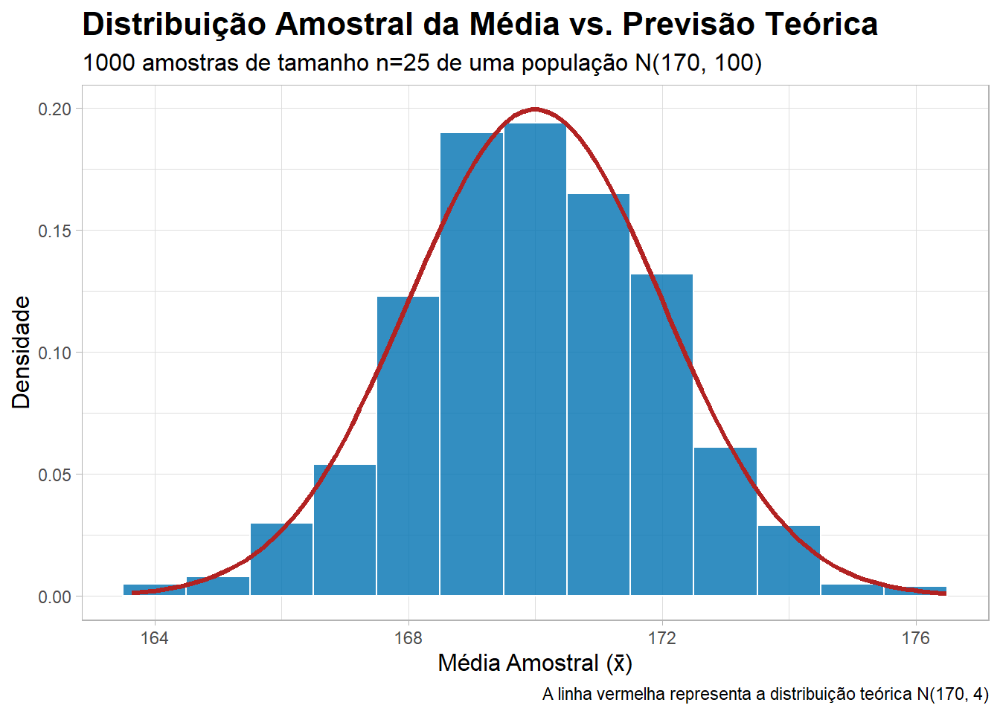
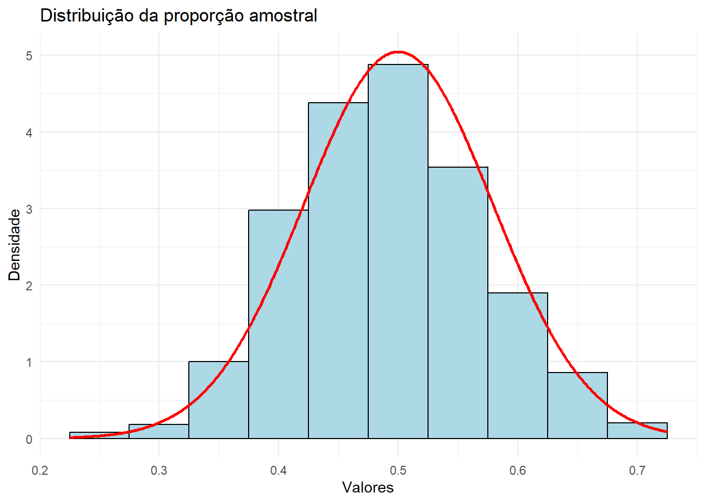

require("tidyverse")Inferência para Uma População
Quando nos deparamos com a necessidade de fazer inferências sobre uma única população, estamos lidando com o desafio de entender e estimar parâmetros populacionais com base em uma única amostra. Em muitas situações práticas, é impossível ou inviável coletar dados de toda a população. Nesse contexto, a estatística nos oferece ferramentas para tirar conclusões sobre essa população, com base em um número limitado de observações.
Até agora, aprendemos como avaliar a qualidade de um estimador: vimos o que significa ele ser não viciado, consistente e eficiente. Em outras palavras, já sabemos julgar se um número calculado a partir de uma amostra é, em princípio, um bom representante daquilo que queremos saber sobre a população — como a média, a proporção ou a variância populacional.
Mas há uma pergunta essencial que ainda não foi respondida: “Mesmo que o meu estimador seja bom, o quão confiável é o valor obtido na prática, a partir de uma única amostra?”
É aí que entra o próximo passo da jornada: entender o comportamento dos estimadores ao longo de todas as possíveis amostras. O nome disso é distribuição amostral. Quando conhecemos essa distribuição, conseguimos quantificar a incerteza que acompanha qualquer estimativa — e com isso, construir intervalos de confiança e realizar testes de hipótese.
Para isso, vamos estudar os casos em que essas distribuições são conhecidas:
- A distribuição da média amostral quando a população é normal
- A distribuição da variância amostral quando a população é normal
Adicionalmente, vamos explorar uma das ideias mais poderosas da estatística: o Teorema Central do Limite (TCL). Ele nos mostra que, mesmo que a população não seja normal, a média das amostras tende a seguir uma distribuição normal à medida que o tamanho da amostra cresce. Isso abre as portas para aplicar a inferência em situações reais, onde raramente conhecemos a distribuição da população. Um exemplo clássico é a utilização do TCL na distribuição da proporção amostral em dados binários.
O apelo computacional entra aqui como um aliado fundamental. Ao simularmos muitas amostras de uma mesma população, conseguimos:
- Ver na prática como as distribuições amostrais se formam.
- Comparar distribuições em diferentes cenários (normal, assimétrica, etc.)
- Observar o efeito do tamanho amostral sobre a variabilidade e a forma da distribuição
- Visualizar como os estimadores se comportam e como o TCL se manifesta
Essa abordagem transforma o aprendizado: da teoria abstrata para uma compreensão visual, empírica e exploratória, tornando a transição para intervalos de confiança e testes de hipótese muito mais natural e intuitiva.
Vamos ver os seguintes tópicos, computacionalmente:
- Distribuição amostral da média (caso normal)
- Teorema central do limite
- Distribuição amostral da proporção
- Distribuição amostral da variância (caso normal)
Distribuição Amostral da Média (Caso Normal)
Seja \(X_1, X_2, \cdots, X_n\) uma amostra aleatória simples de tamanho n extraída de uma população com distribuição normal:
\[ \bar{X} \sim N\left(\mu, \frac{\sigma^2}{n}\right) \]
com \(\mu \in \mathbb{R}\) e \(\sigma^2 > 0\).
Pode-se provar que a média amostral \(\bar{X}\) possui distribuição normal com média \(\mu\) e variância \(\frac{\sigma^2}{n}\).
\[ \bar{X} \sim N\left(\mu, \frac{\sigma^2}{n}\right) \]
Este resultado é exato, pois decorre da suposição de normalidade da população. Não há necessidade de invocar o Teorema Central do Limite aqui.
Exemplo
Para exemplificar, considere que \(X_1, X_2,\cdots, X_n\) seja uma amostra aleatória de uma população com distribuição Normal \((\mu=170,\sigma^2=100)\). Ao considerar \(n=25\), teremos que:
\[ \bar{X} \sim N(\mu, \frac{\sigma^2}{n}) = N(170, 4) \]
Vamos comprovar este resultado computacionalmente, simulando \(B=1000\) amostras:
# --- Configuração dos Parâmetros ---
# Parâmetros da população original (X)
media_pop <- 170
dp_pop <- 10
# Parâmetros da simulação
n_amostra <- 25
n_replicas <- 1000
# Parâmetros da distribuição amostral teórica (X-barra)
media_esperada_x_barra <- media_pop
dp_esperado_x_barra <- dp_pop / sqrt(n_amostra)
# Garantir a reprodutibilidade dos resultados
set.seed(2025)
# Gerar as médias amostrais e armazená-las em um tibble (data frame moderno)
dados_simulados <- tibble(
media_amostral = replicate(n_replicas, {
amostra <- rnorm(n_amostra, mean = media_pop, sd = dp_pop)
mean(amostra)
})
)
# Criar o gráfico usando um fluxo de dados com o pipe |>
dados_simulados |>
ggplot(aes(x = media_amostral)) +
# Histograma de densidade:
# - `alpha` controla a transparência para um visual mais suave
# - `binwidth` pode ser ajustado para controlar a granularidade do histograma
geom_histogram(aes(y = after_stat(density)),
fill = "#0072B2", color = "white", alpha = 0.8, binwidth = 1) +
# Curva de densidade teórica (Normal) adicionada diretamente:
# - `stat_function` plota uma função sem precisar de um data frame pré-calculado
# - `fun = dnorm` especifica a função de densidade da Normal
# - `args` passa os parâmetros (média e desvio padrão) para a função `dnorm`
stat_function(fun = dnorm,
args = list(mean = media_esperada_x_barra, sd = dp_esperado_x_barra),
color = "firebrick", linewidth = 1.2) +
# Melhorar os rótulos e adicionar um subtítulo explicativo
labs(
title = "Distribuição Amostral da Média vs. Previsão Teórica",
subtitle = paste0(n_replicas, " amostras de tamanho n=", n_amostra,
" de uma população N(", media_pop, ", ", dp_pop^2, ")"),
x = "Média Amostral (x̄)",
y = "Densidade",
caption = "A linha vermelha representa a distribuição teórica N(170, 4)"
) +
# Escolher um tema
theme_light() +
# Ajustes finos no tema para melhor legibilidade
theme(
plot.title = element_text(face = "bold", size = 16),
plot.subtitle = element_text(size = 12),
axis.title = element_text(size = 12)
)
Exercício
Considere que \(X_1, X_2, \cdots, X_n\) seja uma amostra aleatória de tamanho \(n = 10\) de uma população com distribuição Normal \((\mu= 80, \sigma^2= 64)\).
- Qual é a distribuição teórica da média amostral \(\bar{X}\)?
- Simule \(B = 1000\) amostras dessa população e mostre, computacionalmente, que a distribuição empírica de \(\bar{X}\) se aproxima da distribuição teórica.
## Teorema Central do Limite
Seja \(X_1, X_2, \cdots, X_n\) uma amostra aleatória simples de tamanho n, com as seguintes propriedades:
- As variáveis \(X_i\) são independentes e identicamente distribuídas (i.i.d.).
- Todas possuem a mesma esperança \(\mu\) e variância finita \(\sigma^2\).
Então, o Teorema Central do Limite afirma que, à medida que o tamanho da amostra \(n\) cresce indefinidamente, a distribuição da média amostral \(\bar{X}_n\) se aproxima de uma distribuição normal com média \(\mu\) e variância \(\frac{\sigma^2}{n}\):
\[ \bar{X}_n \xrightarrow{d} N\left(\mu, \frac{\sigma^2}{n}\right) \quad \text{quando } n \to \infty \]
Embora o Teorema Central do Limite garanta que a distribuição da média amostral tende à normalidade à medida de \(n \to \infty\), na prática é comum encontrar a recomendação de que uma amostra de tamanho \(n \geq 30\) já seria “suficientemente grande” para aplicar aproximações normais. Essa regra prática, porém, é controversa. O valor n=30 não possui uma justificativa teórica universal: o quão rapidamente a média amostral se aproxima da normalidade depende da forma da distribuição original.
- Se a distribuição populacional for simétrica e pouco assimétrica, valores menores de \(n\) podem ser suficientes.
- Por outro lado, se a distribuição for altamente assimétrica ou com caudas pesadas, pode-se exigir amostras muito maiores para que a aproximação normal seja razoável.
Assim, o uso do \(n=30\) como critério fixo deve ser visto com cautela, sendo mais prudente considerar as características da distribuição original e, se possível, avaliar a aproximação por meio de simulações ou métodos computacionais.
O resultado do TCL é surpreendente e fundamental porque:
- Ele vale independentemente da distribuição original da população (desde que \(\mu\) e \(\sigma^2\) existam e sejam finitos).
- Permite o uso da distribuição normal para aproximar a distribuição da média amostral mesmo quando a população não é normal.
- Justifica o uso da normalidade em muitas aplicações da inferência estatística (intervalos de confiança, testes de hipótese, etc.).
No exemplo e exercícios a seguir, vamos supor que a população é caracterizada por diferentes distribuições e vamos comprovar o Teorema Central do Limite, em cada caso.
Exemplo: Distribuição Exponencial
Para ilustrar o teorema central do limite, vamos fazer um exemplo assumindo que \(X_1, X_2, \cdots, X_n\) seja uma amostra aleatória de uma população com distribuição Exponencial com parâmetro \(\lambda\). Sabemos que:
\[ \begin{align} E(X) = \frac{1}{\lambda} \\ Var(X) = \frac{1}{\lambda^2} \end{align} \]
De acordo com o teorema central do limite (TCL), temos que a média amostral \(\bar{X}\) tem distribuição aproximadamente normal com média \(\mu = \frac{1}{\lambda}\) e variância \(\frac{1}{n \lambda^2}\), isto é:
\[ \bar{X} \sim N\left(\frac{1}{\lambda}, \frac{1}{n \lambda^2}\right) \]
No nosso estudo, vamos considerar que \(\lambda = 6\) e \(n = 36\). Assim, a distribuição aproximada de \(\bar{X}\) será:
\[ \bar{X} \sim N \left(\frac{1}{\lambda}, \frac{1}{n \lambda^2}\right) = N\left(\frac{1}{6}, \frac{1}{36 \cdot 36}\right) \]
Seguem os comandos:
# Parâmetros populacionais de X
lambda_real = 6
# Tamanho da amostra
n = 36
# Parâmetros populacionais de Xbarra (TCL)
media_real_x_barra = 1/lambda_real
sigma_real_x_barra = sqrt(1/(lambda_real^2*n))
# Quantidade de réplicas
B = 1000
# Cria o vetor de B médias amostrais da população teórica
set.seed(2025)
medias = replicate(B,mean(rexp(n,rate=lambda_real)))
# Criar data frame
df <- data.frame(medias = medias)
# Criar data frame das probabilidades teóricas
seq = seq(min(medias),max(medias), length.out = 500)
df_teorico <- data.frame(
medias = seq,
dens = dnorm(seq, mean=media_real_x_barra,
sd=sigma_real_x_barra)
)
# Criar o gráfico
ggplot(df, aes(x = medias)) +
# histograma
geom_histogram(aes(y = ..density..),
fill = "lightblue", color = "black") +
# gráfico de linha
geom_line(data = df_teorico, aes(x = medias, y = dens),
color = "red", size = 1) +
labs(title = "Distribuição da média amostral",
x = "Valores", y = "Densidade") +
theme_minimal()Warning: Using `size` aesthetic for lines was deprecated in ggplot2 3.4.0.
ℹ Please use `linewidth` instead.Warning: The dot-dot notation (`..density..`) was deprecated in ggplot2 3.4.0.
ℹ Please use `after_stat(density)` instead.`stat_bin()` using `bins = 30`. Pick better value with `binwidth`.
Exercício: Distribuição Uniforme
Para ilustrar o Teorema Central do Limite (TCL), considere que \(X_1, X_2, \cdots, X_n\) seja uma amostra aleatória de uma população com distribuição Uniforme no intervalo \((a,b)\). Sabemos que:
\[ \begin{align} E(X) = \frac{a+b}{2} \\ Var(X) = \frac{(b-a)^2}{12} \end{align} \]
Se \(n = 49\), \(a = 2\), \(b = 5\):
- Qual é a distribuição teórica da média amostral \(\bar{X}\)?
- Simule \(B = 1000\) amostras dessa população e mostre, computacionalmente, que a distribuição empírica de \(\bar{X}\) se aproxima da distribuição teórica.
Aplicativo Shiny
Este aplicativo Shiny foi desenvolvido para ilustrar, de forma interativa e visual, o Teorema Central do Limite (TCL) — um dos pilares da inferência estatística. A partir da simulação de amostras de diferentes distribuições, o usuário pode observar como a distribuição da média amostral tende a uma distribuição normal à medida que o tamanho da amostra aumenta, independentemente da forma da distribuição original. Explore diferentes cenários, escolha a distribuição populacional, defina parâmetros, o tamanho da amostra e o número de repetições, e veja o TCL em ação: [Simulação TCL](https://guilhermeuff.shinyapps.io/TEOREMA_TCL/)
Distribuição Amostral da Proporção
Considere uma variável aleatória \(X \sim \text{Bernoulli}(p)\) com:
\[ P(X = 1) = p \quad \text{e} \quad P(X = 0) = 1 - p, \quad \text{com } 0 < p < 1 \]
Sejam \(X_1, X_2, \cdots, X_n\) uma amostra aleatória simples de tamanho n, i.i.d., com:
\[ X_i \sim \text{Bernoulli}(p), \quad i = 1, 2, \cdots, n \]
A proporção amostral \(\hat{p}\) é definida como:
\[ \hat{p} = \frac{1}{n} \sum_{i=1}^{n} X_i \]
Ou seja, \(\hat{p}\) é a fração de sucessos observados na amostra. Ela é, basicamente, uma média amostral. De acordo com o teorema central do limite, a proporção amostral \(\hat{p}\) pode ser aproximada por uma normal:
\[ \hat{p} \sim N\left(p, \frac{p(1-p)}{n}\right) \]
Essa distribuição pode ser aproximada por uma normal quando as seguintes condições são satisfeitas:
\[ n \cdot p \geq 5 \quad \text{e} \quad n \cdot (1 - p) \geq 5 \]
Essa regra garante que há eventos e não-eventos suficientes na amostra para que a distribuição de p^ seja aproximadamente simétrica.
Exemplo
Para ilustrar este resultado, vamos considerar que \(X_1, X_2, \cdots, X_n\) seja uma amostra aleatória de tamanho \(n=40\) de uma população com distribuição Bernoulli com parâmetro \(p=0,5\). Assim, a distribuição da proporção amostral \(\hat{p}\) é aproximada por:
\[ \hat{p} \sim N\left(0,5, \frac{0,5 \cdot (1-0,5)}{40}\right) = N\left(0,5, 0,00625\right) \]
Note que \(np = 40 \cdot 0.5 = 20 \geq 5\) e \(n(1-p) = 40 \cdot (1-0.5) = 20 \geq 5\). Assim, a aproximação deve ser satisfeita. Vamos investigar esse contexto com os seguintes códigos:
# Parâmetros populacionais de X
p = 0.5
# Tamanho da amostra
n = 40
# Parâmetros populacionais de Xbarra (TCL)
media_real_prop = p
sigma_real_prop = sqrt((p*(1-p))/n)
# Quantidade de réplicas
B = 1000
# Cria o vetor de B médias amostrais da população teórica
set.seed(2025)
props = replicate(B,mean(rbinom(n,size=1,p=p)))
# Criar data frame
df <- data.frame(props = props)
# Criar data frame das probabilidades teóricas
seq = seq(min(props),max(props), length.out = 500)
df_teorico <- data.frame(
props = seq,
dens = dnorm(seq, mean=media_real_prop,
sd=sigma_real_prop)
)
# Criar o gráfico
ggplot(df, aes(x = props)) +
# histograma
geom_histogram(aes(y = ..density..), bins = nclass.Sturges(df$props),
fill = "lightblue", color = "black") +
# gráfico de linha
geom_line(data = df_teorico, aes(x = props, y = dens),
color = "red", size = 1) +
labs(title = "Distribuição da proporção amostral",
x = "Valores", y = "Densidade") +
theme_minimal()
Exercício
Considere que \(X_1, X_2, \cdots, X_n\) seja uma amostra aleatória de tamanho \(n=36\) de uma população com distribuição Bernoulli com parâmetro \(p=0,9\).
- O Teorema Central do Limite será satisfeito?
- Prove isto, computacionalmente. Considere \(B=1000\).
Distribuição Amostral da Variância (Caso Normal)
Seja \(X_1, X_2, \cdtos, X_n\) uma amostra aleatória simples de tamanho \(n\) proveniente de uma população com distribuição normal:
\[ S^2 = \frac{1}{n-1} \sum_{i=1}^{n} (X_i - \bar{X})^2 \]
A estatística
\[ \frac{(n-1)S^2}{\sigma^2} \]
segue uma distribuição qui-quadrado com \(n-1\) graus de liberdade:
\[ \frac{(n-1)S^2}{\sigma^2} \sim \chi^2_{n-1} \]
Este resultado é exato somente sob a suposição de normalidade da população. O Teorema Central do Limite não se aplica neste caso.
Exercício
Considere que \(X_1, X_2, \cdots, X_n\) seja uma amostra aleatória de tamanho \(n=16\) de uma população com distribuição Normal com parâmetros \(\mu=170\) e \(\sigma^2=100\). Considerando \(B=1000\) verifique, computacionalmente, se a distribuição da estatística \((n−1)S^2\sigma^2\) tem distribuição qui-quadrado com \(n−1\) graus de liberdade. Simulação TCL